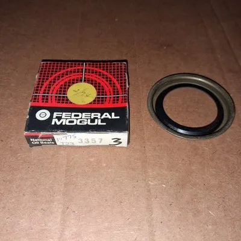
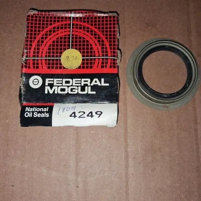
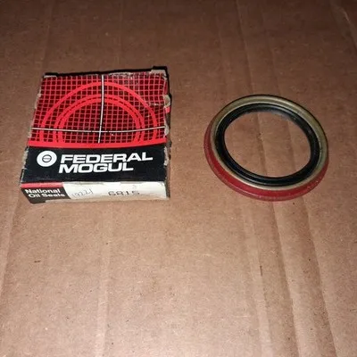

Exhaust Gasket
AP Exhaust 8749 Exhaust Flange Gasket 1-13/16 ID 95-04 Toyota Tacoma Corolla NOS
8749
Fits 2013-2016 Toyota Corolla · 2013-2016 Toyota Tacoma
$16.99
View details31 parts from National, mostly engine parts, transmission & drivetrain and exhaust parts. Each listing shows the part number, condition and photos. Check fitment on the part page before you order.
31 parts
Online checkout through Square. Ships from Carbondale, PA, or pick up by confirmed appointment only. Fitment question? Message us.
8749
Fits 2013-2016 Toyota Corolla · 2013-2016 Toyota Tacoma
$16.99
View details
9095
Fits 1991-2011 Ford Explorer · 1987-2011 Ford Ranger (3 listed)
$19.99
View details
2043
Fits 1988-1997 Chevrolet K1500 (321 listed)
$18.99
View details
223535
Fits 1989-1991 Chevrolet Sprint · 2003-2009 Chrysler PT Cruiser (210 listed)
$19.99
View details
3214
Fits 1979-1983 Ford Fairmont · 1976-1980 Ford Pinto (813 listed)
$15.99
View details
3357
Fits 1980-1987 Chevrolet Chevette · 1981-1987 Pontiac T1000 (155 listed)
$12.99
View details
3459
Fits 1984-2007 Dodge Caravan · 2007-2009 Chrysler Aspen (535 listed)
$13.99
View details
3604
Fits 1983-1996 Ford Bronco (1427 listed)
$16.99
View details
3622
Fits 2001-2009 Ford Escape · 1986-1997 Ford Aerostar (1071 listed)
$17.99
View details
3655
Fits 1993-1996 Chrysler Concorde · 1982-1995 Chrysler LeBaron (1559 listed)
$19.99
View details
4040N
Fits 1984-1995 Plymouth Voyager (97 listed)
$13.99
View details
4072
Fits 1982-2005 Chevrolet Cavalier · 1997-2010 Chevrolet Malibu (406 listed)
$19.99
View details
CR16593
Fits 1989-1995 Plymouth Acclaim · 1982-1995 Chrysler LeBaron (622 listed)
$12.99
View details
Timken 4148
Fits 1975-2003 Ford F-150 · 2002 Ford E-150 (1609 listed)
$14.99
View details
4249
Fits 1984-1995 Plymouth Voyager · 1990-1995 Chrysler Town & Country (327 listed)
$12.99
View details
4250
Fits 1976-1995 Ford F-150 · 1981-1993 Dodge D350 (2622 listed)
$12.99
View details
471271
Fits 1987-1991 Chevrolet Blazer · 1980-1995 GMC Jimmy (1528 listed)
$14.99
View details
CR 21063
Fits 1973-1974 Chevrolet Blazer
$12.99
View details
473468
Fits 1980 Plymouth PB100 · 1980 Plymouth PB200 (1542 listed)
$16.99
View details
473677
Fits 1985-1992 BMW 735i (45 listed)
$12.99
View details
475458
Fits 1975-1976 Dodge D200 · 1975-1976 Dodge D300 (504 listed)
$17.99
View details
Timken 4762N
Fits 2007-2018 GMC Sierra · 1999-2018 GMC Yukon (1785 listed)
$14.99
View details
5778
Fits 1988-1992 Eagle Vista (301 listed)
$18.99
View details
6815
Fits 1980 Lincoln Versailles · 1963-1970 Ford Falcon (1766 listed)
$18.99
View details
E37A-1190-AB
Fits 1984-1990 Ford Bronco II · 1983-1989 Ford Ranger (304 listed)
$12.99
View details
8516N
Fits 1980-1989 Dodge Diplomat (435 listed)
$16.99
View details
8622
Fits 1987-1991 Chevrolet Blazer · 1988-1991 Chevrolet C1500 (1539 listed)
$12.99
View details
8660S
Fits 2006-2009 Ford Crown Victoria · 1983-2011 Ford Ranger (1833 listed)
$13.99
View details
8871
Fits 1975-1986 Chevrolet C10 · 1971-1986 Chevrolet C10 Suburban (1374 listed)
$21.99
View details
9025
Interchange 085337039763
$22.99
View details
9449
Fits 1980-1981 Buick Electra · 1980-1981 Buick Estate Wagon (2231 listed)
$14.99
View details